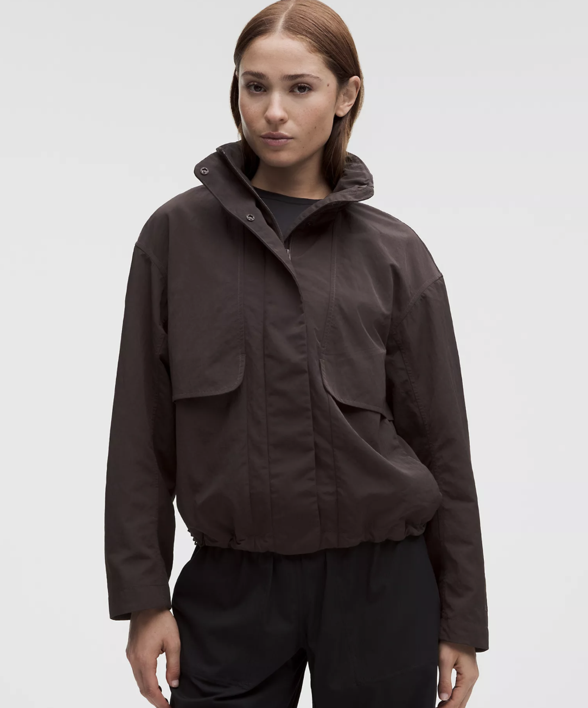

Why Chicago College Students Should Own the Always Effortless Jacket

Between early classes, the walk across campus, and exploring the city after your last lecture, students spend a lot of their day outside. You need a jacket that works for all of it — not too heavy, not too flimsy, and good-looking enough to wear anywhere. The Always Effortless Jacket is built for exactly that life.
The jacket problem every student knows
Chicago weather shifts fast, and a single day can feel like three. You leave your dorm in the morning chill, sit in an overheated lecture hall, walk to lunch under a gray sky, then head somewhere after dark when the temperature has dropped again. A heavy coat is unbearable indoors and a light one won't cut it at night. What you really need is a versatile layer that moves with your day instead of fighting it. That's the whole idea behind this jacket — flexibility that makes it easy to grab and go.
Built for unpredictable days
Big temperature swings are the norm here, and the Always Effortless Jacket is designed to handle them. It's light enough to layer over a t-shirt or the Campus Fleece for a fall morning, and easy to pack away when the sun comes out. Wear it on its own on a mild day, or use it as a smart midlayer under something warmer when winter arrives. It's built for the four-season city, which in practice means it earns a spot in your bag for most of the year. And the rule still holds: the lake wind doesn't care about your plans. Your jacket should.
Why students keep reaching for it
- Easy, flattering fit. Looks put-together without any effort, which matters when you're rushing between class and work.
- Lightweight and packable. Stuffs into a backpack so you're never stuck carrying a coat around all afternoon.
- Versatile styling. Works over a tee, a hoodie, or the Campus Fleece for real winter warmth.
- Everyday durability. Made to handle commutes, coffee runs, and campus life day after day.
A layer that works all year
Most jackets live in a closet for six months. This one doesn't. Use it as your go-to from early fall through late spring, as a midlayer in the coldest weeks, and as a light cover-up on cool summer evenings by the lake. Pair it with the Chi Town Puffer or the Green Winter Jacket for January, and with the ZW Trench for the rainy stretches in between. One jacket that plays well with everything else in your closet is worth more than three that only work in one condition.
Style without the effort
The name says it plainly. You want to look good without planning an outfit the night before, and this jacket delivers that. It reads casual enough for a lecture hall and polished enough for a night out, so you're never underdressed or overdressed for long. For students juggling classes, jobs, and a social life, that kind of reliability is genuinely useful.
Why it belongs in your rotation
Good gear removes friction from your day. The Always Effortless Jacket does exactly that: one layer that fits nearly every forecast and nearly every plan. It's the piece you'll grab without thinking, and the one you'll still be wearing when the semester ends.
Study. Commute. Explore. Stay ChiActive.